From RAW file to finished image.
Decoding, color, grading, library, and export in one open-source app, built natively for Windows and Mac.
Windows 10/11 x64 · Apple Silicon Mac · Free and open source (GPL-3.0)
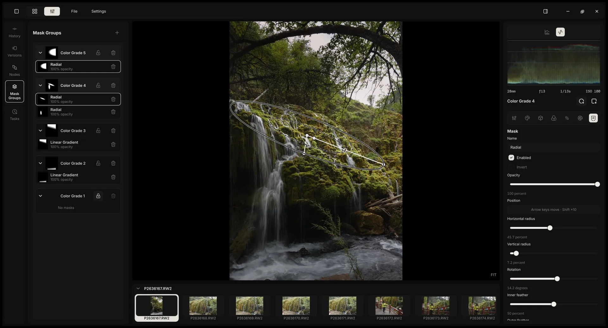
New in 0.3.3
AI agents
alcedo-cli installs with Alcedo Studio and gives an agent the commands behind the interface: open, import, rate, edit, preview, search, and export.
The Alcedo skill for agents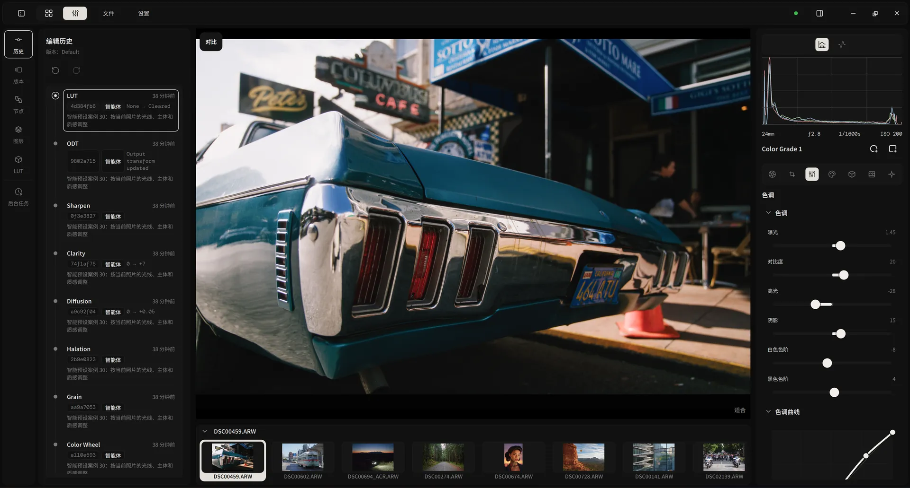
Technical specifications
- Command line
- alcedo-cli, installed next to the application (inside the app bundle on macOS); JSON in and out
- Agents
- Claude Code, Codex, and other agents that run shell commands; the Alcedo skill teaches them the commands
- Commands
- Projects, import, rating, every editor field, LUTs, versions, previews, search, and export
- Sessions
- Headless, without a window, for batch work; or the window you are using
- Control
- Your edit controls are locked while an agent works; pan, zoom, and scopes stay available; Stop ends its control at once
- History
- Agent edits are marked and show the agent's note; undo works as for your own edits
New
More new in 0.3
A LUT browser for 113 film stocks, JPEG and TIFF editing, compare, export presets, and RAW imports nearly 30 times faster.
Full release notesLUT browser
Filter film stocks by category, source, brand, and print stock. Click once to apply, again to remove.
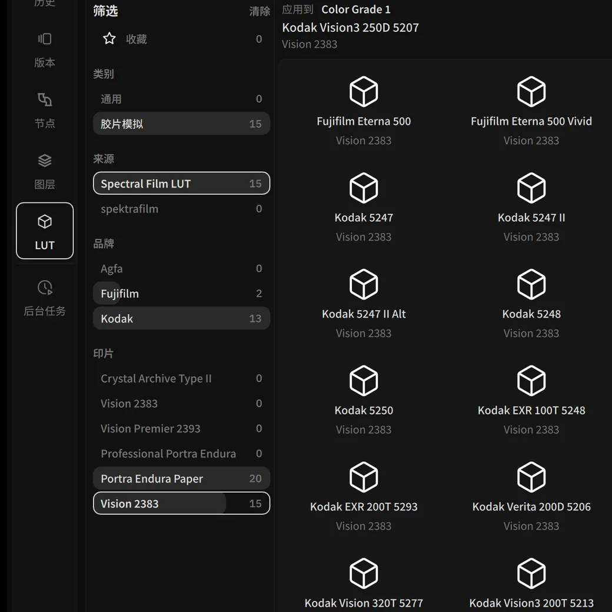
LUT encodings
Choose what a LUT expects and produces, from camera log to PQ. Alcedo remembers it for that LUT.
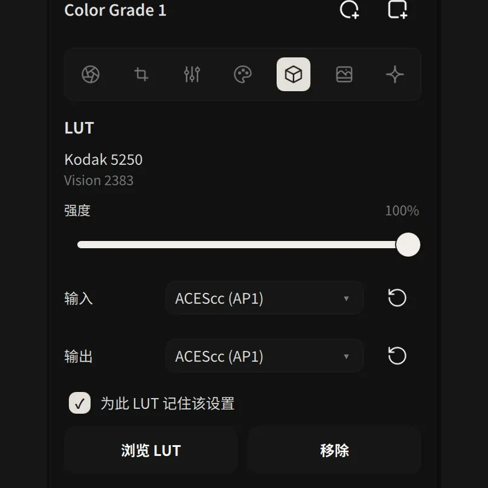
Black mist
A diffusion filter: a soft glow around bright lights, with midtones kept sharp.
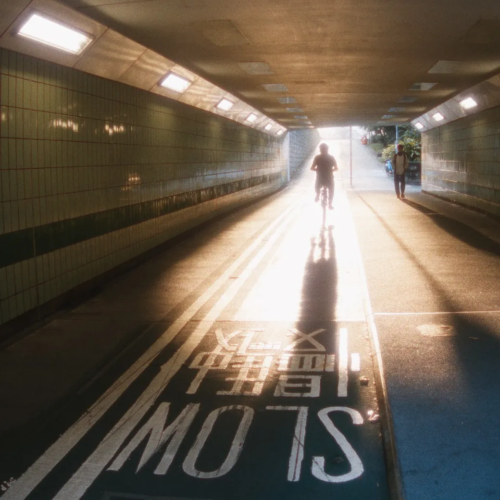
Compare
Before and after, or two versions: side by side, or with a divider you drag.
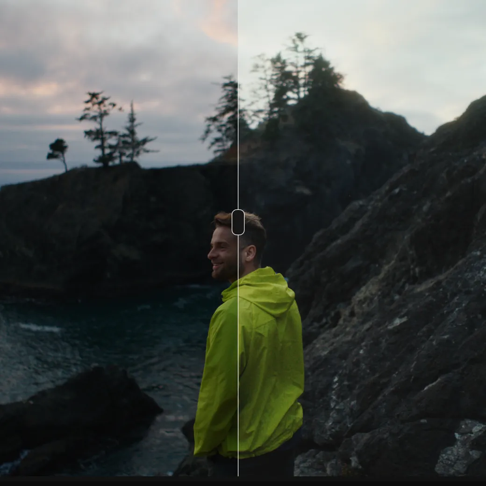
JPEG, TIFF, and EXR
Edit them like RAW. Embedded color profiles bring each image into ACES.
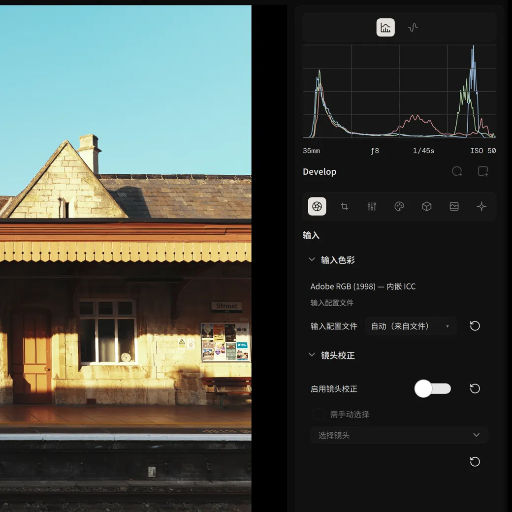
Sort and group
Group the library by camera, lens, or any other field, and collapse the groups.
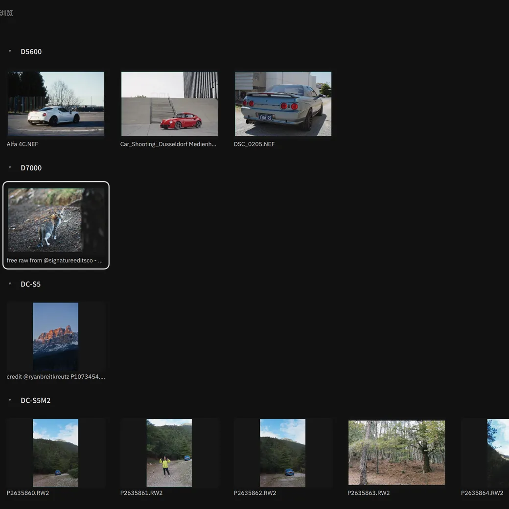
Nodes and masks
Every grade node is a complete set of tools. Local adjustments stay inside their masks.
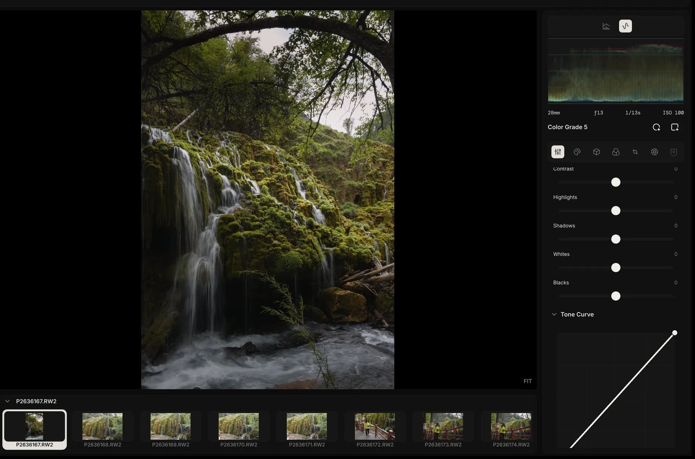
Technical specifications
- Node chain
- Develop → Color Grade nodes (any number) → display rendering transform
- Grading tools
- Local tone mapping · Lift / Gamma / Gain color wheels · tone curve · selective color
- Node editing
- Add, connect, rename, multi-select, batch delete; recorded in history and versions
- Lock protection
- Default grade layers are locked; any layer can be locked by hand
- Mask types
- Linear gradient · radial gradient
- Mask controls
- Position, radius, rotation, inner and outer feather, opacity, invert
- Masks per node
- Multiple, organized in the mask groups panel with thumbnails
Scene-referred color
32-bit floating point throughout, graded in ACEScc log space for an even response to exposure and tone.
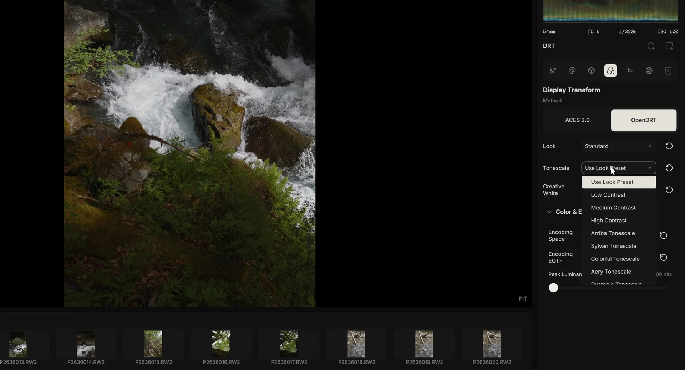
Technical specifications
- Precision
- 32-bit floating point throughout
- Camera color
- Camera color matrices; spectral data from rawtoaces-data for some models
- Grading space
- ACEScc (AP1 primaries)
- Display transform
- ACES 2.0 · OpenDRT
- Output targets
- Rec.709 · Display P3 · Rec.2020, with PQ and HLG
- HDR monitoring
- Extended dynamic range (EDR) on macOS
- Contrast
- S-curve on OkLab lightness; brightness and hue are preserved
- LUT encodings New
- 26 scene and display encodings for each LUT's input and output; a display output returns to the scene through the ACES 2.0 inverse output transform
- JPEG, PNG, TIFF, OpenEXR New
- The embedded color profile brings the image into ACES; OpenEXR, PQ, and HLG images are marked as HDR
Render engine
A render graph on the GPU. Change a parameter and only the nodes after it are recomputed.
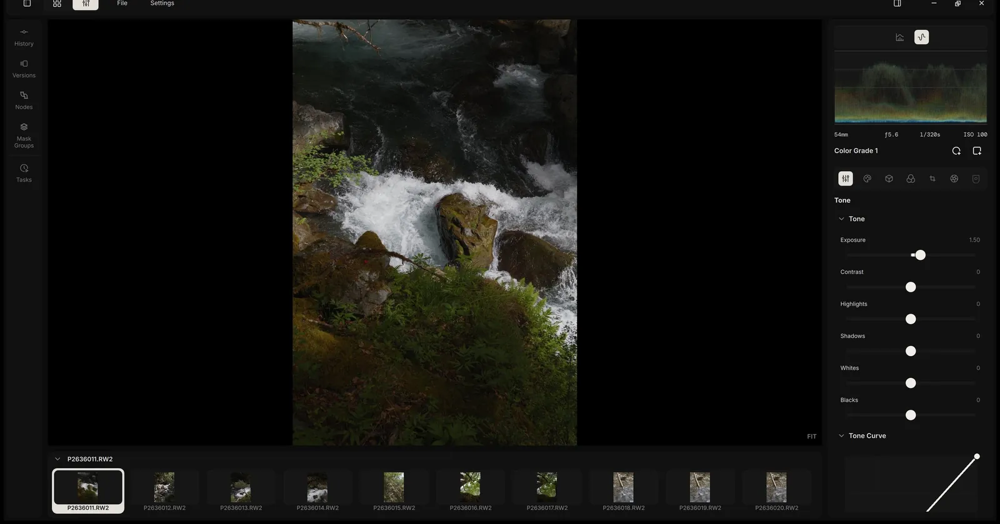
Technical specifications
- Windows
- CUDA (NVIDIA) · OpenCL (AMD / Intel)
- macOS
- Metal (Apple Silicon)
- Incremental rendering
- Results of unchanged nodes are cached by version and reused
- Working memory
- Two RGBA32F buffers used in turn; memory does not grow with the number of nodes
- Transient memory
- Demosaicing, highlight reconstruction, and local tone mapping share one pool, released when rendering finishes
- One pipeline
- Editor preview, thumbnails, analysis, and export; thumbnails and export use their own GPU resources and never slow the preview
- Preview
- 2560 px long edge while dragging, 4096 px at rest; only the visible region when zoomed
- Scopes
- Histogram · RGB waveform
Library and search
Built on the DuckDB embedded database. All search runs on your own machine.
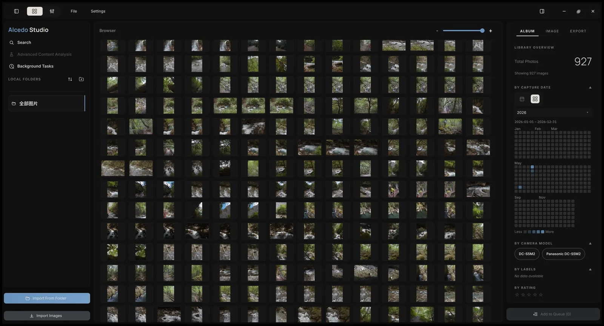
Technical specifications
- Project file
- One .alcd file: folders, metadata, semantic indexes, edit history
- Search speed
- 20,000 photos: live preview in about 12 ms, applied search in 13–21 ms, on a background thread
- Search terms
- “6.7” means June 7; “iso800” no longer matches ISO 8000; “dng” is a file type; terms combine with AND
- Shooting heatmap
- A year of shooting activity; click a day to filter
- Metadata filters
- Any combination of camera, lens, aperture, shutter, ISO, date, and rating
- Semantic search
- Local CLIP models and an HNSW vector index; offline after a one-time model download
- Import New
- RAW, JPEG, PNG, TIFF, and OpenEXR, chosen by type for each folder and recognized by content; failed imports leave no partial records
- Import speed New
- 639 RAW photos in 1.1 s instead of 31.6 s, with 149 MB peak memory
- Sort and group New
- By any field, import day, or last edit; groups collapse and expand
Film and looks
113 film stocks from spectral film models, a browser for every LUT you own, and finishing effects that match between preview and export.
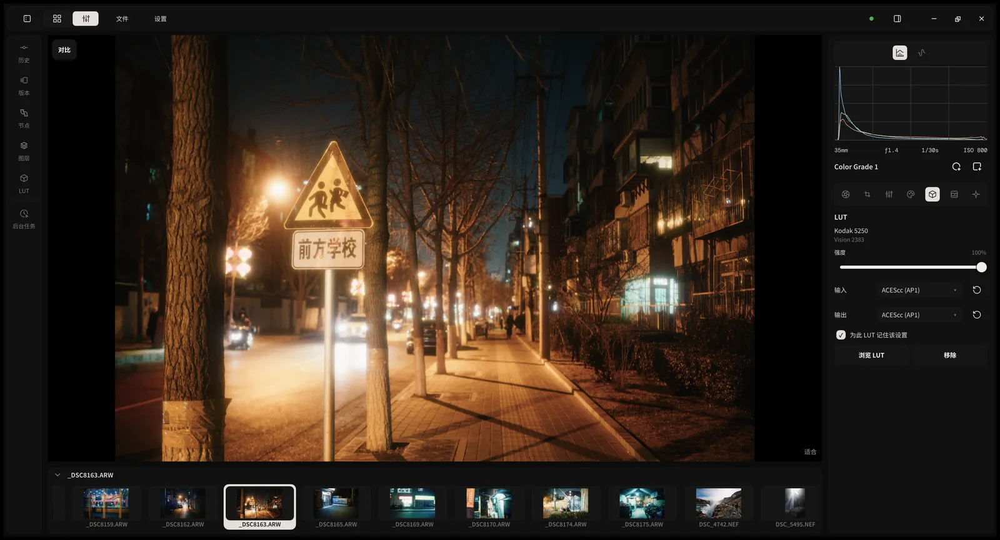
Technical specifications
- Film LUTs
- 113, in the official Spectral Film LUT and spektrafilm packages; downloaded in Settings > LUTs and signature-checked
- LUT browser New
- Grid or list; filters for category, source, brand, and print stock; search that forgives typos; strength from 0 to 100%
- Your LUTs New
- .cube files in any folder of your LUT library, under User
- Grain
- After IPOL 2017, “Realistic Film Grain Rendering”; strength varies with image lightness
- Halation
- A faint red glow around high-contrast edges
- Diffusion New
- A black mist filter: bright lights glow softly, midtone detail stays sharp
- Post Processing New
- Clarity, sharpening, grain, halation, and diffusion on one page
Export
Up to 32-bit float, HDR with gain maps, and a preset for every destination.
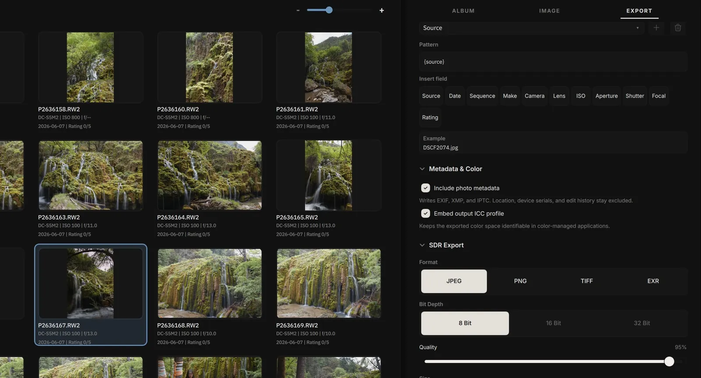
Technical specifications
- Presets New
- Standard, Web, Social Media, Email, Maximum Quality JPEG, 16-bit TIFF, and EXR Archive, or save your own
- Formats
- JPEG 8-bit · PNG 8/16-bit · TIFF 8/16/32-bit · OpenEXR 16/32-bit float · Ultra HDR
- Size
- Original · long edge · bounding box · print size with DPI
- File name tokens
- Source name, date, camera, lens, aperture, shutter, ISO, rating, sequence
- Metadata New
- EXIF metadata and the ICC profile can each be turned on or off; camera and lens serial numbers are never written
- Destination New
- The last export folder is remembered, also after a restart
And the foundations.
RAW decoding
A customized LibRaw fork for current cameras.
Technical specifications
- Cameras
- Canon, Nikon, Sony, Fujifilm, Panasonic, OM System, Leica, Pentax, Sigma, and DNG from phones and drones
- Camera color
- Corrected levels, white balance, and color for the Sony A7C II, Canon EOS R6 Mark III, and others; DNG HueSatMap and LookTable in full
- Demosaicing
- RCD for Bayer; a GPU neural engine for X-Trans, also available for Bayer
- Highlights
- Inpaint Opposed, after darktable and RawTherapee
- Lens correction
- Lensfun: distortion, lateral chromatic aberration, vignetting
History and versions
Every adjustment is a commit; stepping back never overwrites history.
Technical specifications
- Named versions
- Several per photo, each an independent history branch
- Compare New
- Before and after, or two versions; side by side or with a divider, left/right or top/bottom
- Selective copy New
- Versions, nodes, or individual parameters, now including RAW decode, white balance, lens correction, and crop; pasting to many photos runs in the background
- Shortcuts
- Customizable, with conflict checks
AI descriptions and ratings
Optional, with your own OpenAI- or Anthropic-compatible API key.
Technical specifications
- Output
- A description, a 1–5 star rating, and a short reason
- Rating standard
- Four strictness levels
- Keys
- Stored in Windows Credential Manager or the macOS Keychain
- Operation
- A background queue; the interface never blocks
Open-source credits
Released under GPL-3.0 and built on these projects.
Technical specifications
- RAW and metadata
- LibRaw · Lensfun · Exiv2
- Image and data
- OpenImageIO · OpenCV · DuckDB
- Interface
- Qt / QML · QuickQanava
- Color
- ACES 2.0 · OpenDRT (Jed Smith)
- Film
- spectral_film_lut (Jan Lohse) · spektrafilm (Andrea Volpato) · IPOL 2017 film grain
- Demosaicing
- RCD (Luis Sanz Rodríguez) · DemosaicNet (Gharbi et al., 2016)
- Highlights
- darktable · RawTherapee
Get Alcedo Studio
Free and open source, for Windows and Apple Silicon Mac.
Windows 10/11 x64 · Apple Silicon Mac · Free and open source (GPL-3.0)
Upgrading? LUTs are no longer in the installer: download the official packages in Settings > LUTs. Projects from 0.2.9 or earlier can't be opened in 0.3.